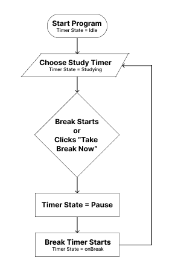
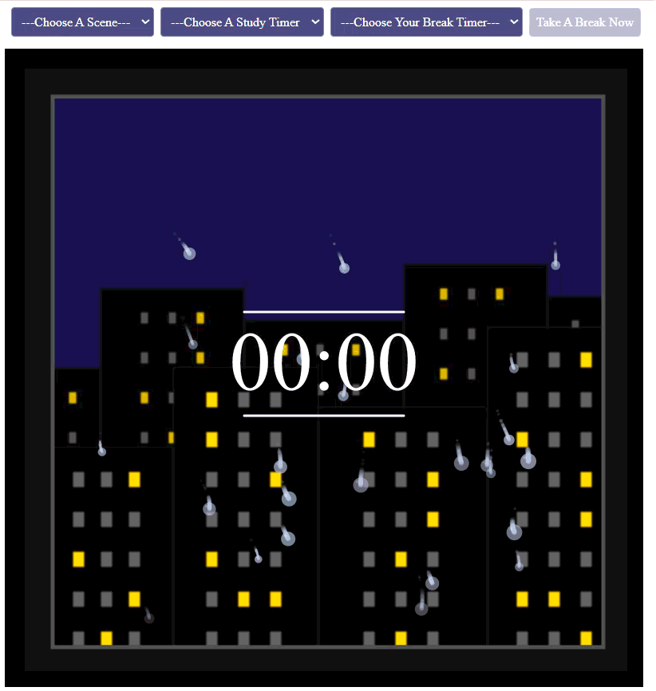

-

Rainy City Scene
Features directional particle rain physics and glowing window tile matrices.
-

Autumn Nook Scene
Simulates drifting leaf forces and warm sunset gradient canvases.
-

Starry Night Scene
Highlights interactive constellation nodes and ambient lunar lighting.
View Live GitHub Demo: StudyScape: Ambient Pomodoro-Style Program
Context: Developed as an exploration of visual design and interactive media, StudyScape is an
ambient, interactive study timer that bridges detailed visual appeal with solid functional logic.
Built entirely in p5.js, the project utilizes a clean, object-oriented model to seamlessly integrate
time management with dynamic nature scene visuals. To ensure smooth performance, static background
layers like skylines and sunsets were pre-rendered onto offscreen graphics buffers, preventing
redundant frame drawing. Additionally, the interactive scenes come alive through custom particle
physics that simulate realistic phenomena, such as raindrops on a window, autumn leaves in the wind,
and twinkling constellations and shooting stars.
Regarding the study timer, a finite state
machine (FSM) manages timer transitions— handling complex edge cases like late duration changes—
while a responsive DOM control panel keeps the UI synchronized in real time. Ultimately, StudyScape
functions as an immersive productivity tool that showcases advanced creative coding mechanics
alongside polished user experience design.
Goal: To explore the combination of visual design and interactive media by building an ambient productivity tool containing dynamic visuals, custom particle physics, a finite state machine timer, and responsive DOM controls.
Process & Iterations:
Consulted Claude AI for initial concept brainstorming, before diving into p5.js and receiving further stuctural assistance with building the visuals, Finite State Machine timer mechanics, and custom particle physics.

Step 1
Designed and built the foundational mechanism of the entire project using a clean, object-oriented p5.js structured (sketch, Timer, Background, Particles, and DOM javascript files). Then, developed a Finite State Machine (FSM) to handle timer states (idle, studying, onBreak, and paused), and created logic for edge cases, such as delaying duration updates right before a session ends

Step 2
Programmed custom particle physics to simulate realistic scene animations, including raindrops on a window, wind-swept falling leaves, and twinkling constellations. Then, to maintain a smooth frame rate through animation, upgraded rendering performance by storing static background layers (skyline, sunset, hills) to offscreen graphics buffers (taking a snapshot of the graphic), rather than redrawing them every frame.
Step 3
Built and integrated a responsive DOM control panel to manage the timer and canvas states (switching between scenes) in real time. Created intuitive user experience limitations– such as automatically disabling timer selections during active break sessions– to ensure seamless function and interaction.
The Challenges:
- Performance Enhancement with Complex Ambient Visuals: Balancing complex visual appeal— such as continuous animation particle physics— with smooth frame rates by storing static background layers onto graphics buffers (as snapshots).
- Stable Timer State Management & Edge Cases: Designing a reliable Finite State Machine (FSM) to handle state transitions (idle, studying, onBreak, paused), while managing edge cases like delaying timer updates if timer settings are changed right at the end of a session.
- Real-Time UI & Canvas Synchronization: Building a responsive DOM control panel that maintains seamless state synchronization with the canvas, including enforcing UX limitations like locking timer selections during active break sessions.
Key Features & Highlights:
- Ambient Environment & Custom Particle Physics: Features dynamic, vector-drawn scenes and simulated continuous animations— including rain drops with residual trails, wind-swept falling leaves, and twinkling constellations and shooting stars.
- Performance-Driven Rendering: Utilized offscreen graphics buffers to pre-render a stored snapshot of each background layer, preventing redundant redrawing across frames.
- Finite State Machine (FSM) Model: Built a clean, object-oriented timer engine that reliably manages state transitions and edge-case behaviours.
- Live DOM UI Syncing: Integrated a responsive control panel that manages real-time state changes between the user interface and the canvas, while providing intuitive UX limitations.
- Modular Object-Oriented Setup: Structured the code into a clean, manageable model, separated into modules (Timer, Background, Particles, DOM)